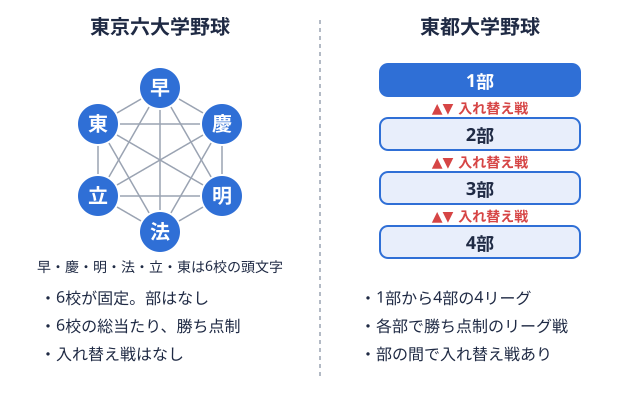
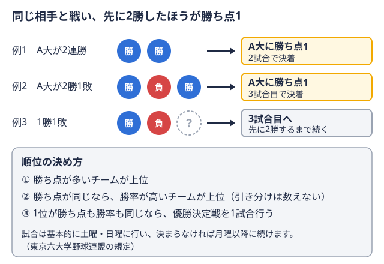

栄養・食事 2026-11-05
野球部の減量と食事｜大学野球部員の体脂肪の落とし方と注意点
「冬の間に少し体を絞りたい」「体が重くて動きにくい気がする」。大学野球部員の中には、こうした理由で減量を考える人もいるのではないでしょうか。一方で、食事を減らしすぎて練習でバテる、体重は落ちたが力も落ちた、といった失敗談も耳にします。野球は体重階級のある競技ではないため、減量は「必ずやるもの」ではなく、必要性を見極めたうえで慎重に進めるものです。
この記事では、大学野球部員が減量を検討するときの食事の考え方を、国立スポーツ科学センター（JISS）の資料などを出典として整理します。増量については別の記事で扱っているため、ここでは「体脂肪を無理なく減らす」「体重を落としすぎない」という観点に絞ります。なお、適正な体重・体脂肪や必要なエネルギー量は、体格、ポジション、練習量、体質によって大きく異なります。持病がある場合や体調に不安がある場合は、チームのトレーナーや医師、管理栄養士に相談したうえで進めてください。
最初に確認したいこと——本当に減量が必要か
減量を始める前に、「なぜ減らしたいのか」を言葉にしておくことをおすすめします。理由があいまいなまま食事を減らすと、体脂肪だけでなく筋肉も減ってしまう場合があります。
次のような場面では、減量よりも先に確認したいことがあります。
- 体重の数字だけが気になっている場合は、体脂肪率や筋肉量など、体組成の内訳を測定してから判断する
- 「周りより太っている気がする」といった印象が理由の場合は、指導者やトレーナーに客観的な意見を聞く
- 過去の体重から大きく増えた理由が、練習量の低下や食べすぎであれば、まず生活リズムと食事内容を見直す
JISSの「ウエイトコントロールガイドブック」では、体重や体脂肪率を、起床後・排尿後・空腹安静時といった同じ条件で測り、変化を継続的に見ることが大切だとされています。体重階級制競技（柔道・レスリング・ボクシングなど）の選手向けにまとめられた資料ですが、体組成を把握して計画的に進めるという考え方は、野球部員が減量を考えるときにも参考になります。ただし、同資料は体重階級制競技を対象としているため、野球にそのまま当てはまるわけではない点に注意してください。
減量のペースの目安——急がないほうがよい理由
急速減量とゆっくり減量の違い
JISSのガイドブックでは、1週間から数日で体重の5%以上を減らすことを「急速減量」、1週間に0.5〜1kgを目標に徐々に減らすことを「ゆっくり減量」と呼んでいます。急速減量で減る体重のほとんどは体水分であり、脱水による体調不良やパフォーマンスの低下が起こるとされています。
また、同じ減量幅でも、急速に減らすよりゆっくり減らしたほうが、体脂肪の減少が多く、除脂肪量（筋肉などの脂肪以外の組織）の減少が少なかったという研究結果が、ガイドブックの中で紹介されています。野球の練習や試合で必要になる力を残しながら体を絞りたいのであれば、短期間で一気に落とすより、時間をかけるほうが理にかなっていると考えられます。
具体的な数字で考える
同ガイドブックは、体脂肪を減らすゆっくり減量について、1週間に体重の0.5〜1%のペースで計画を立てるとしています。例として、体重70kgの選手なら1週間に0.3〜0.7kg、1か月で1.2〜2.8kg程度が理想的だと示されています。
また、体脂肪1kgを減らすには約9,500kcalのエネルギー収支のマイナスが必要とされ、同じ例では、1か月で2.8kgの体脂肪を減らすために、体重を維持しているときの食事より1日あたり約900kcalマイナスになるよう摂取量を決める、という計算が紹介されています。
| 項目 | JISSガイドブックの例（体重70kg） |
|---|---|
| 1週間あたりの減量の目安 | 0.3〜0.7kg（体重の0.5〜1%） |
| 1か月あたりの減量の目安 | 1.2〜2.8kg程度 |
| 体脂肪1kgあたりのエネルギー収支 | 約9,500kcalのマイナス |
| 1日あたりの食事の削減幅（2.8kg減の場合） | 約900kcalのマイナス |
この表は、あくまで体重階級制競技の選手向け資料に載っている計算例です。大学野球部員が同じ数値を目標にすべきという意味ではなく、「体脂肪を減らすには時間がかかる」「極端に急がない」という感覚をつかむための参考として読んでください。練習量が多い日が続く部員にとって、1日900kcalを減らす設定は負担が大きい場合もあります。
減量中でも「たんぱく質」は減らさない
減量というと「全体的に食べる量を減らす」イメージがありますが、減らすときこそ意識したいのが、筋肉の材料になるたんぱく質です。
JISSのガイドブックには、減量中の除脂肪量の減少を抑えて維持するために、体重1kgあたり1.6〜2.4gのたんぱく質が必要だと言われている、との記載があります。これは日常的にアスリートに推奨されている量と同量です。体重70kgの場合、1日あたり約112〜168gという計算になります。同資料では、たんぱく質源となる主菜の量はできるだけ減らさず、脂質の少ない食材を選ぶことで、低エネルギー・高たんぱく質の主菜にすることが提案されています。
食事の中で減らしやすいもの・減らしにくいもの
ガイドブックの考え方に沿うと、減らす対象は、主菜の量そのものではなく、調理に使う油や揚げ物の衣、マヨネーズ・ドレッシングなど調味料のエネルギーになります。同資料は、減量中はできるだけ低エネルギーの素材、料理法、調味料を選ぶよう勧めています。
具体的な組み合わせのイメージを挙げます。
- 揚げ物を焼き物・蒸し物・煮物に置き換える
- 鶏の皮を取る、赤身の多い部位を選ぶなど、脂質の少ない主菜にする
- 市販のドレッシングやマヨネーズの量を控えめにする
- 主食（ごはん）を極端に減らさず、練習量に応じて量を調整する
主食を急に大きく減らすと、練習で使うエネルギーが不足しやすくなります。JISSの資料には、体重階級制競技を前提とした炭水化物の調整の流れも載っていますが、これは計量に向けた特殊な手順であり、リーグ戦を戦う野球部員が日常的にまねするものではありません。
エネルギー不足のリスクを知っておく
食事を減らして練習を続けると、体が必要とするエネルギーに対して摂取量が足りない状態になる場合があります。国際オリンピック委員会（IOC）は、2023年のコンセンサスステートメントで、スポーツにおける相対的エネルギー不足（REDs）について整理しています（British Journal of Sports Medicine掲載、PubMed）。この声明では、低エネルギー・アベイラビリティ（運動で消費するエネルギーに対して、食事から得るエネルギーが足りない状態）が問題の中心にあるとされ、男性アスリートも対象に含まれています。また、低エネルギー状態は、問題のない範囲から問題になる範囲まで連続的に捉えられ、短期間で程度が軽い場合は害になりにくいと考えられている、という整理もされています。
つまり、「少し食事を減らしただけ」で直ちに問題になるわけではない一方、長期間にわたって食べる量が足りない状態が続くと、健康やパフォーマンスに影響が出る場合があるということです。次のような様子が続くときは、減量のペースや食事量を見直し、トレーナーや医師への相談を検討してください。
- 練習後の疲れが抜けにくい日が続く
- 練習の動きや力の出方が落ちたと感じる
- ケガや体調不良を繰り返す
- 気分の落ち込みやイライラが増えた
- 食事や体重のことが頭から離れなくなった
食事制限が続くと、友人や家族との食事の機会が減り、孤立してしまうといった心理面・社会面の影響もありえます。JISSのガイドブックでは、成長段階にあるジュニアアスリートの減量は勧められないとされています。大学の新入生は成長期の途中にある場合もあるため、高校生以下の年代の減量は、特に慎重に考える必要があります。
欠食を避け、食事のリズムを保つ
減量というと、朝食や夕食を抜く方法を思い浮かべる人もいるかもしれません。しかし、JISSのガイドブックには、試合後などに食べすぎたあとの数日間は低エネルギー食にして体重を調整する一方で、欠食をすると除脂肪量の減少につながるため、食事の回数は普段どおりにする、という趣旨の説明があります。
これは過食後の調整について書かれた箇所ですが、「食事の回数を減らすのではなく、1回あたりの内容を見直す」という考え方は、日常の減量でも応用できます。授業や練習の時間割の中で、食事を抜きやすい時間帯を把握しておくと、補食を含めた計画を立てやすくなります。食事のタイミングや補食の入れ方については、野球部の食事メニューと増量の進め方でも詳しく扱っているので、減量中の食事計画を考えるときの参考にしてください。
減量中の1日の食事の組み立て例
JISSのガイドブックには、減量時の1日の食事例（約2,000kcal、体重70kgの選手の場合）として、ごはん200g、ハムエッグ、納豆、サラダ（ノンオイルドレッシング）、低脂肪牛乳、バナナといった朝食の例が示されています。この例ではたんぱく質は体重1kgあたり1.6g、炭水化物は体重1kgあたり4.5gの設計です。
ここから読み取れるのは、「量を大幅に減らす」のではなく、油の量を抑え、主菜と主食は残しながら全体のエネルギーを調整するという方針です。具体的なレシピは、JISSが公開しているアスリートのわいわいレシピにも低エネルギーの例が掲載されています。実際に自分の食事に取り入れる際は、練習量と体格に合わせて、チームのトレーナーや管理栄養士に量を確認してください。
大学野球のシーズンに合わせた減量の時期設計
大学野球は春季・秋季の年2シーズン制でリーグ戦が行われます。東京六大学野球は6校総当たりリーグの全チームが、ほかのすべてのチームと対戦する方式。東京六大学では6校がそれぞれ他の5校と戦う。  
リーグ戦中は「落とさない」を優先する
リーグ戦の期間は、週末の試合に向けてコンディションを整える時期です。この時期に食事を大きく減らすと、試合や練習で必要なエネルギーが不足し、疲労が抜けにくくなる場合があります。リーグ戦中は新たに減量を始めるより、これまでの食事のリズムを保ち、体重と体調を安定させることを優先する考え方があります。
減量に取り組みやすいのはシーズンの節目
秋季リーグ戦が終わってから春季リーグ戦が始まるまでの期間は、試合の負荷が相対的に小さく、体組成を見直しやすい時期と考えられます。目標までの期間を逆算して、ゆっくり進めるなら次の手順が整理しやすいでしょう。
- 起床後など同じ条件で、体重と体脂肪率を週1回程度記録する
- 減量が必要な理由と、目標体重・期間をトレーナーや指導者と話して決める
- 1日の食事で、揚げ物や調味料などの油のエネルギーから見直す
- 主菜（たんぱく質）と主食は極端に減らさない
- 2〜4週間続けて体重と練習中の体調を確認し、食事量を調整する
- 春季リーグ戦が近づいたら、体重を落とし続けるのではなく、安定させる
自チームが対戦するリーグの日程や、シーズンがどの段階にあるかは、東京六大学野球 秋季リーグの日程や東都大学野球1部 秋季リーグの順位表で確認できます。春季リーグ戦の開幕時期は各連盟の発表を確認し、そこから逆算して減量の期間を決めてください。
減量とトレーニング・ケガの兼ね合い
食事を減らしている時期に、筋力トレーニングや投球量を急に増やすと、体への負担が大きくなる場合があります。エネルギーが不足した状態で追い込むと、疲労がたまりやすくなる可能性があるため、減量中は練習の強度とのバランスを意識することが大切です。オフシーズンのトレーニングの組み方は、野球の筋トレメニュー（大学生のオフシーズン）で扱っています。
肩や肘のケアについては、野球肩・野球肘の予防に関する記事も参考にしてください。減量中に痛みや違和感が出た場合は、自己判断で続けず、トレーナーや医療機関に相談することをおすすめします。
サプリメントや極端な方法に頼らない
減量用をうたうサプリメントや、短期間で体重を落とせると宣伝する方法には、注意が必要です。JISSのガイドブックにはサプリメントの有効性を整理した項目がありますが、同資料の中心は食事による計画的な減量です。サプリメントを使う場合は、成分と摂取量を確認し、トレーナーや管理栄養士、医師の助言を踏まえて検討してください。
また、サウナや脱水で一時的に体重を落とす方法は、急速減量の一種です。前述のとおり、減る体重のほとんどは体水分であり、脱水による体調不良の原因になります。JISSのガイドブックでは、過去に急速減量が関わる死亡事故が起きたことにも触れられています。野球部の日常的な減量として選ぶ方法ではありません。
まとめ
大学野球部員の減量は、体重の数字だけを追うのではなく、体脂肪を無理なく減らしながら、練習や試合で必要な力を保つことが基本です。JISSのガイドブックに沿って整理すると、次の点が要点になります。
- 減量が必要かどうかを、体組成の測定とトレーナー・指導者との相談で確認する
- ゆっくり減量（週に体重の0.5〜1%程度）を目安に、急速減量は避ける
- たんぱく質は体重1kgあたり1.6〜2.4gを目安に、主菜を減らしすぎない
- 欠食ではなく、油や調味料のエネルギーから見直す
- 疲れが抜けない、ケガを繰り返すなどの状態が続くときは、エネルギー不足を疑って専門家に相談する
- リーグ戦中は「落とさない」を優先し、節目の時期に計画を立てる
数値はいずれも体重階級制競技向けの資料や国際的な声明に基づく目安であり、個人に必要な量を示すものではありません。体格、練習量、体質に合わせて、チームのトレーナーや管理栄養士と相談しながら調整してください。
出典
この部活・競技を応援したい方へ
協賛・応援はこちらから。
取材してほしい部活を募集中
あなたの部活・チームを取材してほしい方はこちらから。
オフシーズン・引退後に、長期インターンという選択
部活で培った力を実務で試す。16タイプ診断（30秒）で合う企業がわかります。